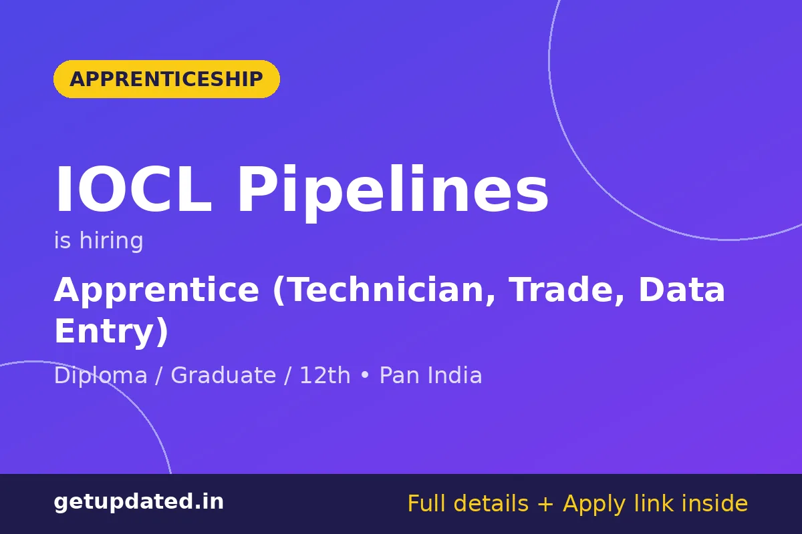

The Railway Recruitment Boards (RRB) have invited online applications for 1265 Station Master posts under Advt. No. CEN 08/2026. Any graduate, in any stream, from a recognised university can apply, and no prior work experience is asked for in the notice text we checked.
The last date to apply online is 25 November 2026, which is only two days from today. If you have not applied yet, finish your form now. Fee payment is open until 27 November 2026, and a correction window follows.
This guide covers the dates, eligibility, vacancies, fee and refund, selection stages, a short preparation plan and the steps to apply.
Table of Contents
- Quick Highlights
- About the Railway Recruitment Boards
- Vacancy Details
- Eligibility Criteria
- Important Dates
- Application Fee and Refund
- Selection Process
- How to Apply
- Preparation Plan
- Common Mistakes to Avoid
- Official Links and Final Checklist
- Final Takeaway
- Also Read
- FAQs
Quick Highlights
| Particular | Details |
|---|---|
| Organisation | Railway Recruitment Boards (RRB), Indian Railways |
| Post | Station Master |
| Advt. No. | CEN 08/2026 |
| Total vacancies | 1265 |
| Qualification | Bachelor's degree in any stream |
| Age limit | 20 to 33 years as on 01 January 2027 |
| Last date to apply | 25 November 2026 |
| Mode of apply | Online, through the official RRB application portal |
Two days left: graduates aged 20 to 33 can apply for 1265 RRB Station Master posts until 25 November 2026.
About the Railway Recruitment Boards
The Railway Recruitment Boards run recruitment for Indian Railways, one of the largest employers in the country. There are regional boards across India, including Ajmer, Bengaluru, Chennai, Mumbai, Kolkata, Secunderabad and Thiruvananthapuram. The official RRB website lists all of them.
Station Master is a core operational role. A Station Master is responsible for train movement at a station, safety and coordination with the control office. It is a responsible job with a clear promotion path, and that is why lakhs of graduates compete for it.
Vacancy Details
The notice lists 1265 posts. The category-wise split is below.
| Category | No. of posts |
|---|---|
| General (UR) | 542 |
| OBC | 296 |
| EWS | 147 |
| SC | 176 |
| ST | 104 |
| Total | 1265 |
Zone-wise or board-wise distribution is not given in the text we reviewed. Check the official notification PDF before choosing your RRB region.
Eligibility Criteria
- Education: Bachelor's degree in any stream from a recognised university in India. Engineering, BA, BCom and BSc graduates are all eligible.
- Age: minimum 20 years and maximum 33 years as on 01 January 2027. Relaxation applies to reserved categories as per railway rules.
- Experience: not mentioned as a requirement, so freshers can apply.
Check your degree status
Read the official notification for the cut-off date by which your degree must be complete, and for medical standards. Applicants who do not meet the conditions on the cut-off date can be rejected at the verification stage.
Important Dates
| Event | Date |
|---|---|
| Application start | 27 October 2026 |
| Last date to apply | 25 November 2026 |
| Last date for fee payment | 27 November 2026 |
| Correction window | 28 November to 07 December 2026 |
| Exam date | To be notified later |
| Admit card | Before the exam |
Apply early
The portal usually gets very slow in the last hours. Submit today instead of waiting for 25 November.
Application Fee and Refund
| Category | Fee |
|---|---|
| General / OBC / EWS | ₹500 |
| SC / ST / EBC | ₹250 |
| All female candidates | ₹250 |
Payment is online by debit card, credit card, internet banking, IMPS or cash card / mobile wallet. After you appear in the Stage I exam, ₹400 is refunded to General and OBC candidates and ₹250 to the others, into the bank account. So the fee is largely returned if you actually take the test.
Selection Process
The selection has three parts as per the notice text:
- Online examination: a computer-based test. The refund text mentions a Stage I exam, so expect more than one stage. Confirm the pattern in the official notification.
- Medical examination: railway safety posts have fixed medical standards, including vision. Check them early.
- Document verification: originals of your degree, ID, category certificate and photographs.
Salary and pay level are not stated in the text we reviewed, so check the official notification for them.

How to Apply
- Open the official RRB application portal from the Official Links section below.
- Register with a valid email ID and mobile number, or log in if you already have an account.
- Select the Station Master notification, CEN 08/2026, and choose your RRB region carefully.
- Fill in personal, education and category details exactly as in your certificates.
- Upload the photo and signature in the format asked.
- Pay the fee online before 27 November 2026.
- Submit and save a PDF copy of the form.
Keep documents ready
Keep your degree marks, Aadhaar, category certificate (if any) and a scanned signature ready before you log in. This saves time.
Preparation Plan
RRB computer-based tests usually test general awareness, arithmetic, reasoning and general intelligence. Treat that as a guide and confirm the syllabus in the notification. A simple plan:
- Maths: percentages, ratio, time and work, speed and distance, profit and loss. Practise 30 questions daily.
- Reasoning: series, coding-decoding, syllogism, directions and puzzles.
- General awareness: current affairs of the last 6 to 8 months, basic science, polity, geography and Indian Railways facts.
- Mock tests: take at least one full timed mock every two days and review your errors.
Since the exam date is not announced yet, you have some time after applying. Use it to finish the syllabus once, then focus on mocks.
Common Mistakes to Avoid
- Waiting until the final day and missing the deadline because of portal load.
- Paying the fee late. Fee payment closes on 27 November 2026.
- Choosing an RRB region without checking vacancies and exam centres.
- Wrong category or a name that does not match your certificates.
- Using unofficial sites for the form. Always apply through the official RRB portal.
Use the correction window
From 28 November to 07 December 2026 you can correct details. Use it carefully, because it is a one-time chance for most fields.
Official Links and Final Checklist
- Graduate in any stream, age 20 to 33 as on 01.01.2027
- Application submitted by 25 November 2026
- Fee paid by 27 November 2026
- Printout or PDF of the form saved
Final Takeaway
With 1265 posts, a graduate-level qualification and no experience requirement, the RRB Station Master recruitment is a strong chance for freshers who want a stable railway career. The deadline is very close, so apply through the official link in the Official Links section above, check the details in the notification, and start mock tests right away.
Also Read

Exim Bank Management Trainee Recruitment 2026: Apply Online by 11 December
Read now →
ISRO SDSC SHAR Apprentice Recruitment 2026: 400 Posts for Graduate, Diploma and ITI Candidates
Read now →
ISRO SAC Graduate, Technician and Trade Apprentice Recruitment 2026: Apply Online by 2 December
Read now →
IOCL Pipelines Division Apprentice Recruitment 2026: 500 Seats for Diploma, Graduate and 12th Pass
Read now →Browse all latest jobs & updates →
FAQs
1. How many Station Master posts are in RRB CEN 08/2026?
There are 1265 posts: General 542, OBC 296, EWS 147, SC 176 and ST 104.
2. What is the last date to apply?
The last date for online application is 25 November 2026. Fee payment is open until 27 November 2026.
3. What is the qualification for RRB Station Master?
A Bachelor's degree in any stream from a recognised university in India.
4. What is the age limit?
20 to 33 years as on 01 January 2027, with relaxation for reserved categories as per railway rules.
5. What is the application fee?
₹500 for General/OBC/EWS and ₹250 for SC/ST/EBC and all female candidates. A refund is given after appearing in the Stage I exam.
6. How much fee is refunded?
₹400 for General and OBC candidates and ₹250 for others, after appearing in the Stage I exam.
7. What is the selection process?
Online examination, medical examination and document verification.
8. Can I correct my form after submitting?
A correction window is open from 28 November to 07 December 2026.